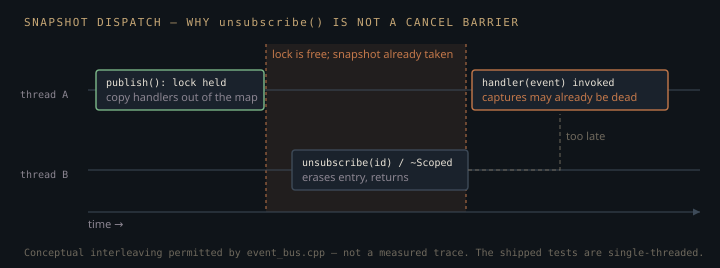

Monograph · Tree · ← Sitemap · EventBus
core
EventBus
Thread-safe pub/sub with typed subscribe helpers.
A finished facility with no engine callers
Start with the fact a reader will find in thirty seconds of grepping, because it reframes everything else: no renderer, scene, physics or example translation unit in this tree publishes or subscribes. The header is pulled in exactly once outside its own `.cpp`, by the `core.hpp` umbrella:
#include "core/event_bus.hpp"ohao/core/core.hpp:14and the only file that includes `core.hpp` is the engine test binary. So the bus is complete, unit-tested, and unadopted.
The engine did not go without cross-module notification; it solved the problem twice, narrower, in the places that needed it. Jolt contact callbacks push into a mutex-guarded vector that `step()` drains and hands to a *single* `IContactListener*`:
case ContactEvent::Type::BEGIN: m_userContactListener->onContactBegin(event); break;ohao/physics/backend/jolt/jolt_backend.cpp:495and log fan-out is one `std::function`, settable and clearable, not a list:
using LogCallback = std::function<void(LogLevel, std::string_view)>;ohao/core/console_widget.hpp:42Both are single-consumer, statically typed, and free of string keys — which is also a fair summary of what those subsystems actually needed. The bus is the generalisation nobody has yet had to reach for. What follows is what it commits you to when someone does.
Dispatch happens outside the lock
`publish` never calls a handler while holding the mutex. It takes the lock, finds the bucket, and copies every `std::function` into a local vector:
handlers.push_back(sub.handler);ohao/core/event_bus.cpp:41Then the lock is released, the `Event` is constructed, and the copies are invoked:
for (const auto& handler : handlers) {ohao/core/event_bus.cpp:49The unknown-key case returns before any of that, so publishing to a type nobody listens for never constructs an `Event`:
if (it == m_subscribers.end()) return;ohao/core/event_bus.cpp:38Holding the lock across dispatch is the obvious implementation and it is a trap twice over. `m_mutex` is a plain `std::mutex`, so a handler that calls `subscribe`, `unsubscribe` or `publish` — the ordinary shape of an event graph — would self-deadlock on re-entry. Swapping in `std::recursive_mutex` fixes the deadlock and leaves the worse bug: a handler that subscribes to the type it is being dispatched for would `push_back` into the very vector being iterated, invalidating the iterator mid-loop. Copying the handler list buys re-entrancy and iterator stability at the price of N `std::function` copies per publish, some of which heap-allocate when the captures exceed the small-object buffer.
The window unsubscribe cannot close
The same snapshot creates the one hazard on this page. Once the lock is dropped, the pending handler list is a private copy that nothing can revoke. `unsubscribe` only touches the map, so it can acquire the lock, erase the entry, and return while a handler copied microseconds earlier has not yet run.

`ScopedSubscription` inherits this exactly. Its destructor forwards to `reset()`, whose only effect on the bus is one `unsubscribe` call, guarded on the handle still owning a bus and a live ID:
if (m_bus && m_id != kInvalidSubscriptionId) {ohao/core/event_bus.hpp:119so RAII gives scope-bound *registration*, not scope-bound *execution*. The usual handler — a lambda capturing `this` or a local by reference — therefore dangles if the owning object is destroyed on one thread while another is mid-`publish`. Every shipped test drives the bus from a single thread, so this path has never run in anger.
`unsubscribe` guarantees no *future* dispatch will include you. It does not join an in-flight one. A bus that is genuinely published from a worker thread needs either handlers that own their state or a barrier this class does not provide.
Identifiers that are never recycled
IDs come from a monotonically increasing 64-bit counter starting at one, with zero reserved as the null value:
SubscriptionId m_nextId = 1;ohao/core/event_bus.hpp:87inline constexpr SubscriptionId kInvalidSubscriptionId = 0;ohao/core/event_bus.hpp:43No free list, no slot reuse, no generation counter needed — a stale ID is inert forever rather than aliasing whoever landed in a recycled slot. Double `unsubscribe` and unsubscribing after `clear()` are silent no-ops for this reason. Destroying a moved-from `ScopedSubscription` is a no-op for an unrelated one: the move null-checks out entirely, because it exchanges the source's ID for `kInvalidSubscriptionId` and its bus pointer for null, and `reset()` requires both:
, m_id(std::exchange(other.m_id, kInvalidSubscriptionId)) {}ohao/core/event_bus.hpp:107so `unsubscribe` is never reached, under any ID scheme.
The cost is paid at removal. An ID does not record which event type it belongs to, so `unsubscribe` walks every bucket in the map and runs `erase_if` on each vector, with no early exit once the match is found:
std::erase_if(subs, [id](const Subscription& s) { return s.id == id; });ohao/core/event_bus.cpp:27Removal is therefore linear in *total* subscriptions, not in the subscribers of one type. Tearing down a scene full of `ScopedSubscription` members is quadratic. Making it a single-bucket erase means `unsubscribe` must be handed the key, not a hash — `std::unordered_map` has no erase-by-hash — so either every handle grows by the `std::string` itself (32 bytes in libstdc++) or type names get interned to an index and the map becomes a vector. Neither is free, and both change the `unsubscribe` signature.
string_view at the door, std::string in the map
The API takes `std::string_view`, but the container is keyed on `std::string` with the default hash — which is not transparent, so no `string_view` lookup is possible:
std::unordered_map<std::string, std::vector<Subscription>> m_subscribers;ohao/core/event_bus.hpp:86`publish` consequently materialises the key before it knows whether anyone is listening:
const std::string key(eventType);ohao/core/event_bus.cpp:33That string is then copied again into `Event::type` for delivery. libstdc++ keeps up to 15 characters inside the string object, so every event type the tests actually subscribe to — `actor.selected` is the longest, at 14 — stays off the heap through both copies. The ordering bites on the dead-key path instead, where the key is built before the lookup that would reject it, and the suite's one publish to a type nobody listens for is 19 characters:
EventBus::instance().publish("no.subscribers.here");tests/engine/engine_tests.cpp:93That call allocates, takes the lock, misses, and frees on the way out. A transparent hash and equality pair would remove the lookup copy without touching a call site.
The typed layer, and its two failure modes
A type mismatch on this bus fails in one of two opposite ways, depending on which half of the API you use, and the quiet half is the half nobody calls.
`subscribeTyped<T>` wraps the untyped handler in a lambda that pointer-casts the `std::any` and drops the event when the cast fails:
if (const T* p = e.try_cast<T>()) {ohao/core/event_bus.hpp:59`std::any` matches on exact `type_info` identity — no conversions, no derived-to-base — so an `int` publisher and an `unsigned` subscriber would produce silence with no diagnostic anywhere. *Would*, because `subscribeTyped` has zero callers anywhere, including the tests: even the test named for typed publish subscribes untyped and does its own `holds<T>` check:
auto sub = make_scoped_subscription(bus, "core.test",tests/engine/engine_tests.cpp:579What the shipped handlers actually do is the loud thing. The string-payload test casts by value, so a mismatch throws `std::bad_any_cast` out of the handler:
received = std::any_cast<std::string>(e.data);tests/engine/engine_tests.cpp:128`publish` has no `catch`, so that exception unwinds into the publisher — after the lock is already released, which at least leaves the mutex intact, but the remaining handlers in the snapshot never run. The payload hazard that would trigger it is real for both entry points: `publishTyped` deduces `T` from its argument and `std::any`'s constructor decays it, so a string literal arrives as `const char*`; the untyped `publish` decays the same way through its `std::any` parameter. Constructing the payload explicitly at the call site is what keeps this test's cast from throwing:
EventBus::instance().publish("actor.selected", std::string("MyActor"));tests/engine/engine_tests.cpp:130One more thing worth knowing before editing the header: the typed constraint names `std::invocable` while the include list omits `<concepts>`:
requires std::invocable<F&, const T&>ohao/core/event_bus.hpp:56It compiles because several headers it does include — `<string_view>`, `<functional>`, `<vector>` — pull `<concepts>` in transitively under libstdc++. That is the whole explanation; the template never being instantiated forces nothing, since a concept-id in a *requires*-clause is looked up when the template is defined. Strip the transitive include and the header fails to parse, callers or no callers.
Contracts
- `unsubscribe` returning does not mean your handler has stopped running. Anything capturing `this` by reference must outlive in-flight publishes, or be driven from one thread only.
- Handlers for a type fire in subscription order (vector `push_back`, snapshot preserves it). Nothing in the header promises this, so relying on it pins an implementation detail.
- `clear()` is global to the bus and un-scoped. On the `instance()` singleton, one subsystem clearing kills every other subsystem's subscriptions. The test suite brackets its EventBus block with a `clear()` at each end purely to isolate that block from the rest of the binary; inside it, every test unsubscribes its own IDs, except the one that deliberately drops an ID to prove `clear()` reclaims it.
- `subscriptionCount()` is exact at the moment the lock is held and stale the instant it returns. It is a diagnostic, not a synchronisation primitive.
- `subscribe` is `[[nodiscard]]`: dropping the returned ID leaks a subscription that only `clear()` can remove.
Source files
ohao/core/core.hppohao/physics/backend/jolt/jolt_backend.cppohao/core/console_widget.hppohao/core/event_bus.cppohao/core/event_bus.hpptests/engine/engine_tests.cppParent hub for the full pipeline narrative; this page is the file-level design unit. Sitemap · hover glossary terms anywhere.